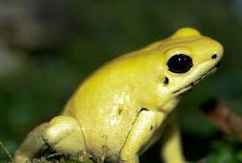
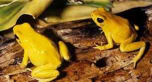

Ếch độc phi tiêu vàng, tên khoa học Phyllobates terribilis, là một loài ếch phi tiêu độc đặc hữu bờ biển Thái Bình Dương của Colombia. Nơi sống tối ưu của P. terribilis là rừng mưa nhiệt đới với lượng mưa cao, độ cao từ 100–200 m, nhiệt độ ít nhất 26 °C, và độ ẩm tương đối–90%. Trong tình trạng sống hoang dã, P. terribilis là động vật xã hội, sống thành bầy đàn lên đến 6 cá thể, tuy nhiên trong điều kiện nuôi nhốt thì chúng có thể sống theo đoàn đông hơn.
Ếch độc phi tiêu vàng, tên khoa học là Phyllobates terribilis, là một loài ếch phi tiêu độc đặc hữu sống ở bờ biển Thái Bình Dương của Colombia. Loài này thường sống trong rừng mưa nhiệt đới, nơi độ ẩm cao và sống thành bầy. Trên lớp da vàng óng của loài sinh vật lưỡng cư bé nhỏ này chứa một loại kịch độc với liều lượng đủ để giết chết 10 người trưởng thành. Chất độc này thấm qua da, tấn công nhanh vào hệ thần kinh khiến nạn nhân đau đớn, co giật, sốt và tê liệt.
